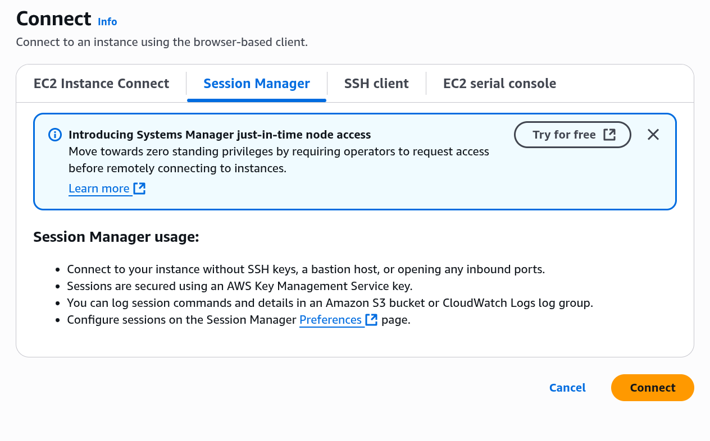

AWS デモ：EC2
📚 6/12 やったこと
1. EC2 インスタンスへの接続
- Instance Connect での接続
- SSH での接続
- Session Manager での接続
Session Manager での接続は、今回同期されるまでに時間がかかりましたが、一旦同期されると以下のように connect ボタンが活性化されます

参考： 少し古い記事ですが、Session Manager での接続方法については以下も参照してください
https://dev.classmethod.jp/articles/ec2-access-with-session-manager/
📚 復習： 6/9 やったこと
1. 下記の構成で、
- VPC を作成
- Public Subnet に EC2 インスタンスを作成、起動
- ローカルマシンから、インスタンスに接続

2. 実際の AWS マネジメントコンソール上で見たリソース配置はこうです

3. インスタンスへの接続は以下の方法があります
- 本日は、Instance Connect のみ実施した
- Session Manager が推奨（一番安全）
- SSH、RDP は、セキュリティで劣る。昔ながらのやり方

🎯 内容
EC2 インスタンスの作成、セキュアな接続、アプリケーション起動までを実施します。
🧱 使用する AWS サービス
- Amazon EC2
- Amazon EC2 Security Group
- AWS Systems Manager
- AWS CloudFormation
🗂️ 構成概要
+------------------------+
| EC2 Instance |
|------------------------|
| OS: Amazon Linux 2023 |
| Node.js + Git |
| Port: 8080 Open |
+------------------------+
↑
|（SSM Session Manager 経由で接続）
🚀 デプロイ手順
- AWS マネジメントコンソール → CloudFormation → 「スタックの作成」
- テンプレートファイル（
template.yml）をアップロードする
- デフォルト設定のまま作成
2. EC2 インスタンスが起動したら確認
- EC2 → インスタンス一覧 → インスタンス が
running になっていること
3. Systems Manager から接続
- Systems Manager → セッションマネージャー → セッションの開始
- 該当インスタンスを選択して接続
4. Web アクセスでアプリを表示
インスタンスの パブリック IP アドレス を確認し、ブラウザで以下にアクセス：
http://<EC2のパブリックIP>:8080
🧼 クリーンアップ
- CloudFormation → スタックを選択 → 削除
- すべてのリソースが自動で削除されます
参考